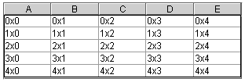

You can use the visual editor to arrange data in rows and columns using JTable.
The class javax.swing.JTable has a model property that is responsible for retrieving and formatting data. The model property is associated with the javax.swing.table.DefaultTableModel model. If you write your own Java code to assign a table model, the visual editor will parse the source and attempt to instantiate and apply the table model to the instance of the JTable in the Design view.
The columns in a JTable can either be explicitly added to the JTable, or can be calculated based on the number of table model columns. The default value of the boolean property autoCreateColumnsFromModel is 'true'. This means that the JTable will create as many columns as the table model returns from the getColumnCount() method.
If you want more control over the table columns, you can set the property autoCreateColumnsFromModel to false, then manually add the columns. Each column is an instance of the class javax.swing.table.TableColumn and can be selected from the palette. You can add new TableColumns to a JTable by dropping them on the Java Beans view. You can also select a TableColumn in the Java Beans view to change its properties in the Properties view.
The Design view lets you see the column with some preview data to help you determine its size, but you cannot select or size a column in the Design view. You must select it in the Java Beans view to change its properties. A table model with 'dummy data' of five empty rows is used to show preview data when the JTable's table model is set to its default value. When a table model has been explicitly provided, either in code that the visual editor parses or because the JTable's value has been overridden, then the dummy table model is not used. If a table model is supplied in code for it to be successfully previewed in the Design view, it must follow the rules for construction that the visual editor recognizes. The JTable must be in a JScrollPane for the table headers to appear. Also, you can use the JTable on JScrollPane option on the palette .

Parent topic: Working with Swing in the visual editor